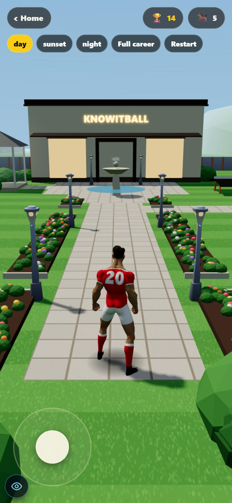
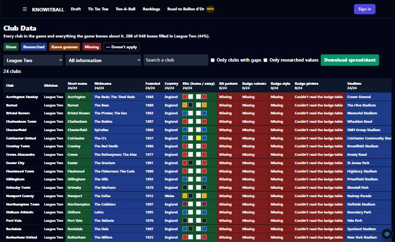

16k → 39kXP to reach level 4 (no more cheap start)
26 → 31Typical player: match number at level 10
8.6× → 3.8×A hat-trick game vs a quiet win
1 pageEvery XP amount, editable: the XP Book
The XP Book
Admin menu → Star Career → XP Book (/admin/star-xp).
The star bar over your first 10 matches
Start a new career. Level 2 now needs 12,000 XP.
The after-match XP card
After any match: minutes, result, goals, assists and the rating bonus.
The 3D garden, and walking into the shop and back
Home → Garden. Walk through the shop's doors; the shop's front doors bring you back.
Club Data, now 75% filled
Admin → Club Data (/admin/clubs). Blue boxes are researched.
National League North and South 2026/27
A career in either league: new clubs, six-club play-offs, Step 3 below.
-
You no longer shoot up the levels at the start
Problem: one level every match up to about level 5; one game could take you from 1 to 3. Why: levels 1→4 cost only 8,000 / 4,000 / 4,000 XP, and every achievement paid 2,400 (a first match unlocks about four). Fix: levels 1→4 now cost 12,000 / 13,000 / 14,000, and achievements pay by how hard they are. measured
Match number when you reach each level, the median of 1,000 simulated careers:
| Player | Level 5 | Level 10 | Level 15 | Level 20 |
|---|
| Typical (rating ~6.8), before | 4 | 26 | 61 | over 80 |
| Typical, now | 11 | 31 | 62 | over 80 |
| Rated 9.5 every game, before | 4 | 10 | 24 | 44 |
| Rated 9.5 every game, now | 6 | 17 | 34 | 58 |
Over ten seasons
Played-out careers through the real game, level at the end of season 10: an average player 29 before and 29 now (held at the level-29 gate); a rising player 62–64 before, 61–62 now; a star 64–69 before, 60–65 now. The great players lose the most because the extras that stacked on a great match are gone.
-
Match XP is by the minute, with one bonus for playing well
Problem: a sub who came on at 88 minutes got 63% of a full match's XP, and a great game paid for the same thing three times. Why: 600 for playing and 360 for starting, whatever the minutes; a hat-trick bonus on top of the three goals; star man and "rating 8+" both rewarding a good game. Fix: measured
| What you do | Before | Now |
|---|
| Play / start | 600 + 360 | 10 a minute (90 min = 900) |
| Win / draw | 360 / 120 | 360 / 120 |
| Each goal | 1,440 | 1,200 |
| Each assist | 960 | 840 |
| Hat-trick | 2,400 | gone |
| Star man + rating 8+ | 2,400 + 960 | 400 per rating point above 6 |
A quiet win (rating 7) went from 1,320 to 1,660 XP. A hat-trick win (rating 9.5) went from 11,400 to 6,260.
-
Multipliers: National League ×1.25, Europa ×4, Conference ×3, cups at your league's rate
Problem: the National League counted the same as North and South, every European game was ×5, and every cup tie was ×4, so a National League side earned Premier League XP in the FA Cup. Fix: North/South ×1, National League ×1.25, League Two ×1.5, League One ×2, Championship ×3, Premier League ×4, Champions League ×5, Europa ×4, Conference ×3, internationals ×4. A cup tie now uses your league's multiplier. measured
-
Promotion pays a share of the title, not extra on top of it
Problem: winning the league paid the title plus 36,000 for promotion. Fix: win it and you get the title XP only; go up any other way (2nd, 3rd or the play-offs) and you get 0.8× that league's title XP. Up from the National League without the title: 24,000 (was 30,000 + 36,000). measured
-
Trophies, awards, achievements, fame
World Cup 360,000 → 400,000. European Championship 240,000 → 300,000. Super Cup 18,000 → 65,000 (the Community Shield stays at 18,000). Awards now have North/South amounts (0.8× the National League's). Achievements: easy 600, medium 2,400, hard 12,000 (were all 2,400; signing still pays 0). Fame: Rising Star 18,000 → 9,000, National Name 48,000 → 24,000. measured
-
Things that paid twice are gone
Appearance and goal milestones (every match and goal already pays), the 25/50/100-cap steps (the first cap stays, 48,000), "a bigger club" (its bigger multiplier already pays), and skills at 100 (they're achievements already). A level a player already has is kept: their best is never taken away. measured
-
The XP Book: every XP amount on one page you can edit
Every amount of XP the career gives, in 8 tabs: In a match, Multipliers, Trophies, Awards, Achievements, Records, Milestones & status, New ideas. Change any number, mark each item Confirmed or Change it (with a note), pick each achievement's level or give it its own amount, and add ideas for new achievements, records, awards and milestones with how you get them and what they should pay. Save makes it the amounts every career uses. seen
How it works
The amounts live in lib/star/xpConfig.ts; the page saves your copy to a shared table (star_xp_config) and the game loads it when a career opens. Ideas pay nothing until they're built: I build them from your list. Lowering an amount never takes a level away from anyone.
-
The garden is a 3D place you walk round, joined to the 3D shop
From your recording. You're the same footballer as in the 3D shop. Sky (day, sunset or night), trees, a stable and paddock (your horse grazes if you own one), a trophy cabinet with your real trophies, a fountain with a bird that drinks, a gazebo with three team-mates on the bench, cans, a plant pot, a teqball table, and parking for your cars. The shop stands where the house was: walk through its doors into the 3D shop, and its front doors bring you back. seen

-
National League North and South 2026/27, Step 3 and six-club play-offs
Both leagues hold the 24 clubs you gave. 1st goes up; 2nd–7th play off (4v7 and 5v6, then 2nd and 3rd at home, then a one-off final); 21st–24th go down to Step 3, whose four waiting clubs come up each season. If your club finishes bottom four, you have to move (Step 3 has no fixtures). measured
-
Club Data: every club, every field, and the gaps filled
Admin → Club Data shows every field for every club: green given, amber guessed, red missing, blue researched (with the source). Filled boxes 51% → 75%. Kit patterns, badge colours and badge shape for every club; ratings (training, youth, reputation, transfer spending) for 67 League One, League Two and National League clubs; short names for the 76 European and Other clubs. Ballon d'Or follows one rule: winners who won it while at the club. seen
